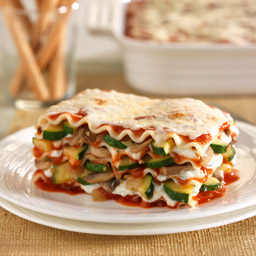

Lasagna Recipe

Description:
A mouth watered meat filled sheet pasta dish guaranteed to suprise your tastebuds.
A plethora of ingredients are used in this fantastic dish and the preparation take a couple hours at most however is every bit as worth it!
Due to the pasta and sauce the average person would think this recipe is Italian but it is suprisingly Greek!
Ingredients:
- 9 Lasagna noodles
- 1 tbsp. olive oil
- 1 lb. Lean ground beef
- 1 Onion, diced
- Kosher salt and freshly ground pepper (To taste)
- 1 (28 oz.) can of crushed tomatoes
- 1 tbsp. Italian seasoning
- 1 (15 oz.) Package of whole milk ricotta
- 3.5 Cups of shredded mozzarella
- 1 Large egg, beaten
- 0.25 Cup of freshly grated parmesan
- 2 tbsp. Chopped fresh parsely leaves
Steps:
- Preheat oven to 350 degrees F. Lightly oil a 9×13 baking dish or coat with nonstick spray.
- In a large pot of boiling salted water, cook lasagna noodles according to package instructions.
- Heat olive oil in a large skillet over medium high heat. Add ground beef and onion and cook until beef has browned, about 3-5 minutes, making
sure to crumble the beef as it cooks; season with salt and pepper, to taste. Drain excess fat. Stir in tomatoes and Italian seasoning until
well combined.
- In a medium bowl, combine ricotta, 1/2 cup mozzarella and egg; set aside.
- Spread 1 cup tomato mixture onto the bottom of a 9×13 baking dish; top with 3 lasagna noodles, 1/2 of the ricotta cheese mixture and 1 cup mozzarella
cheese. Repeat with a second layer. Top with remaining noodles, tomato mixture, 1 cup mozzarella cheese and Parmesan.
- Place into oven and bake for 35-45 minutes, or until bubbling. Then broil for 2-3 minutes, or until top is browned in spots.
- Let cool 15 minutes. Serve, garnished with parsley, if desired.